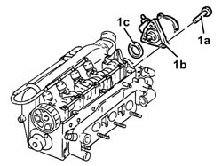
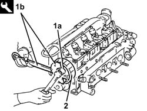
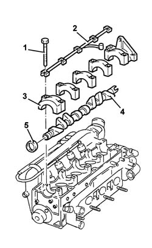

1036B14 overhead camshaft - r r on vehicle - with cylinder head removed
- Path
- Procedures > 10 ENGINE > 1036 TIMING SYSTEM > 1036B overhead camshaft > 1036B14 overhead camshaft - r r on vehicle - with cylinder head removed
- Kind
- repair procedure (removal / refitting; the operation number is the code)
- Applies to
- engines: 1.9 JTD 8V; all production periods
- Interactive page
- https://sloeber94.github.io/elrnDB-a147/en/#/3026019
Applies to: engines: 1.9 JTD 8V; all production periods
 Removing
Removing
 Refitting
Refitting1. Position the tool in the vice.
 | Name | Country |
|---|---|---|
1 | Mount | 1.820.012.000 |
2. Fit the tool.
| Name | Country |
|---|---|---|
2 | Mount | 1.820.258.000 |
3. Fit the tool.
| Name | Country |
|---|---|---|
3 | Spacer | 1.820.267.000 |
4. Position the cylinder head (4a) on the supporting tools and fix it using the nuts (4b).

Applies to: engines: 1.9 JTD 8V; all production periods
1. Undo the bolts (1a) and remove the vacuum unit (1b) complete with O-Ring (1c).

Applies to: engines: 1.9 JTD 8V; all production periods
1. Undo the bolt (1a) for the driven pulley using the tools (1b).
| Name | Country |
|---|---|---|
1b | Counter-torque | 1.822.146.000 |
| Name | Country |
|---|---|---|
1b | Counter-torque | 1.822.156.000 |
2. Remove the driven pulley.

Applies to: engines: 1.9 JTD 8V; all production periods
1. Undo the camshaft cap bolts.
2. Remove the camshaft support lubrication pipe.
3. Remove the camshaft caps.
4. Remove the camshaft.
5. Remove the camshaft front oil seal.

Applies to: engines: 1.9 JTD 8V; all production periods
Refitting
RemovingPlace the crankshaft back in its housing.
Place the camshaft caps back in their housings.
Fit the camshaft mount lubrication pipe.
Tighten the camshaft cap bolts to the specified torque.
 | Fastening | Component | Ø | Value (daNm) |
|---|---|---|---|---|
- | Bolt | CAMSHAFT CAPS | M7 | (Cylinder head side) 1.3 ÷ 1.6 |
1. Refit a new front crankshaft front cover oil seal (1a) using the tool (1b).
| Name | Country |
|---|---|---|
1b | Fitting tool | 1.821.228.000 |

Applies to: engines: 1.9 JTD 8V; all production periods
Refit the toothed driven timing pulley into its housing.
Tighten the driven pulley bolt to the specified torque using the tool.
| Fastening | Component | Ø | Value (daNm) |
|---|---|---|---|---|
- | Bolt | TIMING DUCT PULLEY | M12 | (Cylinder head side) 10.8 - 13.2 |
| Name | Country |
|---|---|---|
- | Counter-torque | 1.822.146.000 |
| Name | Country |
|---|---|---|
- | Counter-torque | 1.822.156.000 |
Place the vacuum unit, complete with O-Ring, back in its housing and secure it tightening the bolts to the recommended torque.
| Fastening | Component | Ø | Value (daNm) |
|---|---|---|---|---|
- | Bolt | BRAKE SERVO VACUUM PUMP | M8 | (Cylinder head side) 2.1 ÷ 2.6 |
Remove the cylinder head from the support tools.
Remove the cylinder head support tools from the vice and return them.